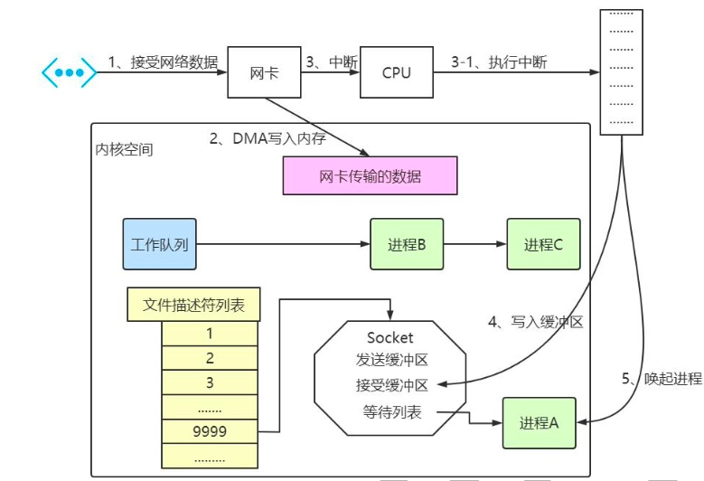

问题1：CPU 操作系统如何知道接收了数据？
问题2：进程阻塞为什么不占用 cpu 资源？
问题3：阻塞的原理是什么?
问题4：操作系统如何知道网络数据对应于哪个 socket？
问题5：操作系统是如何同时监视多个 socket 的数据的？
从事服务端开发，少不了要接触网络编程。epoll 作为 Linux 下高性能网络服务器的必备技术至关重要，nginx、Redis、Skynet 和大部分游戏服务器都使用到这一多路复用技术。
为了能探究epoll的原理，需要从网卡接收数据的流程开始，串联起 CPU 中断、操作系统进程调度等知识；再一步步分析阻塞接收数据、select 到 epoll 的进化过程；最后探究 epoll 的实现细节。
网卡接收数据
Linux 网络包接收过程
进程阻塞原理
了解 epoll 本质，要从操作系统进程调度的角度来看数据接收。阻塞是进程调度的关键一环，指的是进程在等待某事件(如接收到网络数据)发生之前的等待状态，recv、select 和 epoll 都是阻塞方法。
我们看下如下伪代码
//创建 socket
int s = socket(AF_INET, SOCK_STREAM, 0);
//绑定
bind(s, ...)
//监听
listen(s, ...)
//接受客户端连接
int c = accept(s, ...)
//接收客户端数据
recv(c, ...);
//将数据打印出来
printf(...)
这是一段最基础的网络编程代码，先新建 socket 对象，依次调用 bind、listen、accept， 最后调用 recv 接收数据。recv 是个阻塞方法，当程序运行到 recv 时，它会一直等待，直到接收到数据才往下执行。
工作队列
现代操作系统为了支持多任务，实现了进程调度的功能，会把进程分为“运行”和“等待” 等几种状态。运行状态是进程获得 cpu 使用权，正在执行代码的状态;等待状态是阻塞状态， 比如上述程序运行到 recv 时，程序会从运行状态变为等待状态，接收到数据后又变回运行 状态。操作系统会分时执行各个运行状态的进程，由于速度很快，看上去就像是同时执行多个任务。
现在我们假设的计算机中运行着 A、B、C 三个进程，其中进程 A 执行着上述基础网络程序， 一开始，这 3 个进程都被操作系统的工作队列所引用，处于运行状态，分时执行。操作系统工作队列
等待队列
当进程 A 执行到创建 socket 的语句时，操作系统会创建一个由文件系统管理的 socket 对象。这个 socket 对象包含了发送缓冲区、接收缓冲区、等待队列等成员。
等待队列是个非常重要的结构，它指向所有需要等待该 socket 事件的进程
当程序执行到 recv 时，操作系统会将进程 A 从工作队列移动到该 socket 的等待队列中 。由于工作队列只剩下了进程 B 和 C，依据进程调度，cpu 会轮流执行这两个进 程的程序，不会执行进程 A 的程序。所以进程 A 被阻塞，不会往下执行代码，也不会占用 cpu 资源。
等待队列
操作系统添加等待队列只是添加了对这个“等待中”进程的引用，以便在接收到数据时 获取进程对象、将其唤醒，而非直接将进程管理纳入自己之下。
唤醒进程
当 socket 接收到数据后，操作系统将该 socket 等待队列上的进程重新放回到工作队列， 该进程变成运行状态，继续执行代码。也由于 socket 的接收缓冲区已经有了数据，recv 可以返回接收到的数据。
内核接收网络数据全过程
1、进程在 recv 阻塞期间，计算机收到了对端传送的数据。
2、网卡将数据帧DMA到内存的RingBuffer中
3、网卡执行硬中断信号通知 cpu 有数据到达，然后cpu 执行中断程序，调用网卡启动时注册的中断处理函数，发起软中断请求，
4、内核线程ksoftirqd线程发现有软中断请求到来，先关闭硬中断，ksoftirqd线程开始调用驱动的poll函数收包，将网络数据包写入到对应 socket 的接收缓冲区里面， poll函数将收到的包送到协议栈注册的ip_rcv函数中，ip_rcv函数再讲包送到udp_rcv函数中（对于tcp包就送到tcp_rcv）
5、唤醒进程 A，重新将进程 A 放入工作队列中
Linux内核接收数据的过程
操作系统是怎么直到网络数据对应于哪个 socket 的呢？
一个 socket 对应着一个端口号，而网络数据包中包含了 ip 和端口的信息，内核可 以通过端口号找到对应的 socket。当然，为了提高处理速度，操作系统会维护端口号到 socket 的索引结构，以快速读取。
操作系统是如何同时监视多个 socket 的数据的呢？
服务端需要管理多个客户端连接，而 recv 只能监视单个 socket，因此码操作系统的大神们开始寻找监视多个 socket 的方法。epoll 的目的就是高效的监视多个socket，但是万事都有一个循序渐进的过程，我们就从最简陋的监视多个 socket 的方法开始了解
假如能够预先传入一个 socket 列表，如果列表中的 socket 都没有数据，挂起进程，直到有一个 socket 收到数据，将进程唤醒。这种方法很直接，也是 select 的设计思想。
为方便理解，我们先复习 select 的用法。
int s = socket(AF_INET, SOCK_STREAM, 0);
bind(s, ...);
listen(s, ...);
int fds[] = 存放需要监听的 socket
while(1){
int n = select(..., fds, ...)
for(int i=0; i < fds.count; i++) {
if(FD_ISSET(fds[i], ...)) {
//fds[i]的数据处理
}
}
}
在上面的伪代码中，先准备一个数组(伪代码中的 fds)，让 fds 存放着所有需要监视的 socket。然后调用 select，如果 fds 中的所有 socket 都没有数据，select 会阻塞，直到有一个 socket 接收到数据，select 返回，唤醒进程。用户 可以遍历 fds，通过 FD_ISSET 判断具体哪个 socket 收到数据，然后做出处理。
select 的实现思路很直接。假如程序同时监视 sock1、sock2 和 sock3 三个 socket，那么在调用 select 之后，操作系统把进程 A 分别加入这三个 socket 的等待队列中。调用select之后
当任何一个socket 接收到数据之后，中断程序将唤起进程。所唤起进程就是将进程从所有的等待队列中移除，加入到工作队列里面
经由这些步骤，当进程 A 被唤醒之后，它知道至少有一个 socket 接收了数据，程序只需要遍历一遍 socket 列表，就可以得到就绪的 socket。
这种 Select 方式比较简单且行之有效，几乎所有的操作系统都有对应的实现。
但是简单的方法通常是有不足之处的，主要不足如下：
那么，有没有减少遍历的方法?有没有保存就绪 socket 的方法?这两个问题便是 epoll 技术要解决的。
epoll 的设计思路
epoll 是在 select 出现 N 多年后才被发明的，是 select 和 poll 的增强版本。 epoll 通过以下一些措施来改进效率。
措施一：功能分离
select 低效的原因之一是将维护等待队列 和 阻塞队列 两步合二为一了，每次调用 select 都需要这两步操作，然而大多数应用场景中，需要监视的 socket 相对固定，并不需要每次都修改。epoll 将这两个操作分开，先用 epoll_ctl 维护等待队列，再调用 epoll_wait 阻塞进程。相比 select，epoll 拆分了功能。
为方便理解后续的内容，我们先复习下 epoll 的用法。
int epfd = epoll_create(...);
//将所有需要监听的 socket 添加到 epfd 中
epoll_ctl(epfd, ...);
while(1){
int n = epoll_wait(...)
for(接收到数据的 socket) {
//处理
}
}
在上面的代码中，先用 epoll_create 创建一个 epoll 对象 epfd，再通过 epoll_ctl 将需要监视的 socket 添加到 epfd 中，最后调用 epoll_wait 等待数据。epoll 的功能分离，使得 epoll 有了优化的可能。
就绪列表
select 低效的另一个原因在于 程序不知道哪些 socket 收到了数据，只能一个个遍历。如果内核维护一个 就绪列表，引用收到数据的 socket， 就能避免遍历整个等待队列操作了
epoll 的原理和流程
当某一进程调用 epoll_create 方法时，Linux 内核会创建一个 eventpoll 结构体(也就是程序中 epfd 所代表的对象)，eventpoll 对象也是文件系统中的一员
在内核 cache 里会建一个红黑树结构，用于存储以后 epoll_ctl 传来的 socket 外，还会再建立一个 rdllist 双向链表，用于存储准备就绪的事件，当 epoll_wait 调用时，仅仅观察这个 rdllist 双向链表里有没有数据即可。有数据就返回，没有数据就 sleep，等到 timeout 时间到后即使链表没数据也返回。
同时，所有添加到 epoll 中的事件都会与设备(如网卡)驱动程序建立回调关系，也就是说相应事件的发生时会调用这里的回调方法。这个回调方法在内核中叫做 ep_poll_callback，它会把这样的事件放到上面的 rdllist 双向链表中。
当调用 epoll_wait 检查是否有发生事件的连接时，只是检查 eventpoll 对象中的 rdllist 双向链表是否有 epitem 元素而已，如果 rdllist 链表不为空，则这里的事件复制到用户态内存(使用共享内存提高效率)中，同时将事件数量返回给用户。因此 epoll_wait 效率会非常高，可以轻易地处理百万级别的并发连接。
创建 epoll 对象后，用 epoll_ctl 添加或删除所要监听的 socket。以添加 socket 为例， 如果通过 epoll_ctl 添加 sock1、sock2 和 sock3 的监视，内核将会把 eventpoll 添加到 socket 的等待队列中
epoll
当 socket 收到数据后，中断程序会操作 eventpoll 对象，而不是直接操作进程。中断程序会给 eventpoll 的“就绪列表”添加 socket 引用。如下图展示的是 sock2 和 sock3 收到数据后，中断程序让 rdlist 引用这两个 socket。
eventpoll 对象相当于是 socket 和进程之间的中介，socket 的数据接收并不直接影响进程，而是通过改变 eventpoll 的就绪列表来改变进程状态。
当程序执行到 epoll_wait 时，如果 rdlist 已经引用了 socket，那么 epoll_wait 直接返回， 如果 rdlist 为空，阻塞进程。
现在我们假设计算机中正在运行进程 A 和进程 B，在某时刻进程 A 运行到了 epoll_wait 语句。如 下图所示，内核会将进程 A 放入 eventpoll 的等待队列中，阻塞进程。
当 socket 接收到数据，中断程序一方面修改 rdlist，另一方面唤醒 eventpoll 等待队列中的进程，进程 A 再次进入运行状态。也因为 rdlist 的存在，进程 A 可以知道哪些 socket 发生了变化。
epoll 实现细节
epoll 函数
int epoll_create(int size)；
int epoll_ctl(int epfd, int op, int fd, struct epoll_event *event)；
int epoll_wait(int epfd, struct epoll_event * events, int maxevents, int timeout);
struct epoll_event {
__uint32_t events;
epoll_data_t data;
};
eventpoll
上面我们看到 eventpoll 对象对于 epoll 来说是非常重要的
就绪队列应该应使用什么数据结构?
eventpoll 应使用什么数据结构来管理通过 epoll_ctl 添加或删除的 socket?
下面我们来看下 eventpoll 的数据结构
struct eventpoll {
// 用于锁定这个eventpoll数据结构，
// 在用户空间多线程操作这个epoll结构，比如调用epoll_ctl作add, mod, del时，用户空间不需要加锁保护
// 内核用这个mutex帮你搞定
struct mutex mtx;
// 等待队列，epoll_wait时如果当前没有拿到有效的事件，将当前task加入这个等待队列后作进程切换，等待被唤醒
wait_queue_head_t wq;
/* Wait queue used by file->poll() */
// eventpoll对象在使用时都会对应一个struct file对象，赋值到其private_data，
// 其本身也可以被 poll， 那也就需要一个wait queue
wait_queue_head_t poll_wait;
// 所有有事件触发的被监控的fd都会加入到这个列表
struct list_head rdllist;
/* Lock which protects rdllist and ovflist */
rwlock_t lock;
// 所有被监控的 fd 使用红黑树来存储
struct rb_root_cached rbr;
// 当将ready的fd复制到用户进程中，会使用上面的 lock锁锁定rdllist,
// 此时如果有新的ready状态fd, 则临时加入到 ovflist表示的单链表中
struct epitem *ovflist;
// 会autosleep准备的唤醒源
struct wakeup_source *ws;
/* The user that created the eventpoll descriptor */
struct user_struct *user;
// linux下一切皆文件，epoll实例被创建时，同时会创建一个file, file的private_data
// 指向当前这个eventpoll结构
struct file *file;
/* used to optimize loop detection check */
int visited;
struct list_head visited_list_link;
#ifdef CONFIG_NET_RX_BUSY_POLL
/* used to track busy poll napi_id */
unsigned int napi_id;
#endif
};
rdllist就绪列表引用着就绪的 socket，所以它应能够快速的插入数据。
程序可能随时调用 epoll_ctl 添加监视 socket，也可能随时删除。当删除时，若该 socket已经存放在就绪列表中，它也应该被移除。
所以就绪列表应是一种能够快速插入和删除的数据结构。双向链表就是这样一种数据结 构，epoll 使用双向链表来实现就绪队列，也就是 Linux 源码中的 rdllist
既然 epoll 将“维护监视队列”和“进程阻塞”分离，也意味着需要有个数据结构来保 存监视的 socket。至少要方便的添加和移除，还要便于搜索，以避免重复添加。红黑树是一 种自平衡二叉查找树，搜索、插入和删除时间复杂度都是 O(log(N))，效率较好。epoll 使用 了红黑树作为索引结构，也就是 Linux 源码中的 rbr。
因为操作系统要兼顾多种功能，以及由更多需要保存的数据，rdlist 并非直接引用 socket， 而是通过 epitem 间接引用，红黑树的节点也是 epitem 对象。
epitem 结构
每一个被 epoll监控的句柄都会保存在eventpoll内部的红黑树上（eventpoll->rbr），ready状态的句柄也会保存在eventpoll内部的一个链表上（eventpoll->rdllist）, 实现时会将每个句柄封装在一个结构中，这就是 epitem
struct epitem {
// 用于构建红黑树
union {
//RB树节点将此结构链接到eventpoll RB树
struct rb_node rbn;
//用于释放结构体epitem
struct rcu_head rcu;
};
// 用于将当前 epitem 链接到 eventpoll->rdllist中
struct list_head rdllink;
//用于将当前 epitem 链接到"struct eventpoll"->ovflist这个单链表中
struct epitem *next;
//此条目引用的文件描述符信息
struct epoll_filefd ffd;
//附加到poll轮询中的活跃等待队列数
int nwait;
/* List containing poll wait queues */
struct list_head pwqlist;
// 对应的eventpoll对象
struct eventpoll *ep;
/* List header used to link this item to the "struct file" items list */
struct list_head fllink;
/* wakeup_source used when EPOLLWAKEUP is set */
struct wakeup_source __rcu *ws;
// 需要关注的读，写事件等
struct epoll_event event;
};
参考: